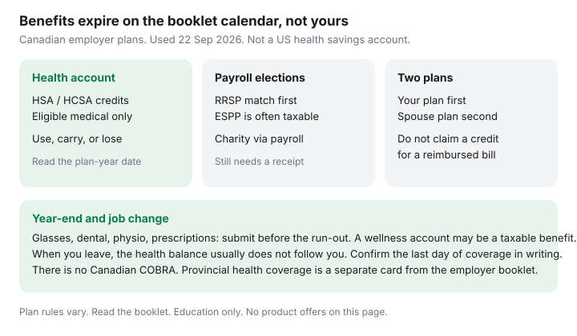

Personal Finance · Canada
Stop Leaving Employer Benefits on the Table in Canada: HSA, Benefits, and Payroll Elections
Canadian employer “HSA” money is a health spending account inside a private health services plan. It is not a United States health savings account, and it is not a TFSA. The credit exists for the plan year printed in the booklet. Glasses in January do not fix a balance that expired in December. Households forfeit the credit, a spouse’s coordination of benefits, and a payroll match because enrolment felt like an HR email. This page is the capture list. Date-stamped 22 Sep 2026.
The retirement slice of payroll — the match formula, a true-up, and a DPSP versus a group RRSP — is already on employer RRSP match. Do that page for the match. Do this page so the health credit and the other elections do not die beside it.
Disclosure: This guide has no natural product offer. Saving Optimizer is not paid by insurers or employers for it. Plan booklets differ. This is education, not tax, benefits, or employment advice. Ask your administrator what your plan actually pays.
Key takeaways
- Map every pot: health spending account, personal or wellness account, dental and paramedical maximums, and the date each one dies. Unused HSA credits often expire. Some plans allow a short carry-forward or a run-out for late claims. The booklet wins.
- A wellness or lifestyle account is frequently a taxable benefit. A health spending account that qualifies as a private health services plan generally is not, when you spend it on eligible medical expenses.
- Enrol dependants on time. Coordination of benefits usually means your plan first, then your spouse’s. Do not claim a medical credit for a dollar the plan reimbursed.
- Payroll order: capture the RRSP match, then optional ESPP or charitable elections you actually want. An ESPP discount is often a taxable benefit.
- Canada has no COBRA equivalent. When you leave, coverage usually ends on the date in the booklet. The HSA balance does not follow you to the next job.
Map HSA, PSA, and wellness dollars and claim deadlines
Pull the benefits booklet and the latest statement, not the onboarding slide. Write four lines:
- Health spending account (HSA or HCSA). An annual credit, employer-funded, for expenses that fit the plan’s medical list and CRA’s private health services plan rules. Typical uses include the part of dental, vision, and paramedical bills the core plan did not pay. If you do not claim, the unused credit often disappears at the plan-year end. A minority of plans carry a portion forward or allow a run-out of 30 to 90 days for claims incurred before the deadline. Write the date that applies to you.
- Personal spending account or wellness account. Fitness, clubs, sometimes gear. Many of these are taxable benefits because they are not a private health services plan. The after-tax value can still be worth claiming. Know which column it sits in before you treat it as “free.”
- Core health and dental maximums. A $1,500 paramedical cap and a separate HSA are two pots. Using the HSA first, when the core plan would have paid, wastes the credit. Submit in the order the booklet states.
- Health-care spending versus a savings account you own. You generally cannot contribute your own money to an employer HSA to “top it up” the way a US HSA works. Do not open a mystery account at a bank because a podcast used the same three letters.
Eligible expenses usually track CRA’s medical-expense list, narrowed by the insurer. Cosmetic services are the common refusal. Keep the receipt that shows the patient, the provider, the date, and the amount. A credit-card line that says “clinic” is not a claim.

Enrolment mistakes that cost families every year
Default coverage is not a strategy. The misses that show up in middle age are specific. A new spouse or a child is not on the plan because the life event window was 31 days and the email was buried. A dependant who aged out is still assumed to be covered. Optional life or critical-illness coverage was declined at hire and cannot be added later without evidence of health. Out-of-country emergency coverage was assumed to equal a travel policy. Long-term disability is employee-paid in some plans and employer-paid in others; that choice can change whether a future benefit is taxable. The booklet’s tax note is the one to read. This page will not tell you which premium to pick.
Positive enrolment — the kind that requires you to re-elect every year — is how credits reset to zero because you “did it last year.” If your employer uses positive enrolment, the deadline belongs on the same calendar as property tax and RRSP season. Add the dependant’s date of birth so you see the student-proof deadline coming, often around age 21 or 25 if the plan covers full-time students. Proof of enrolment is a school form, not a screenshot of a timetable.
Payroll elections: RRSP match, ESPP, charitable giving
Order the elections by what is irreversible. The employer RRSP or DPSP match is usually the largest guaranteed piece. Capture it using the match guide, including room in a group RRSP versus a DPSP that does not use your RRSP room. Do not raise the match so high that the paycheque cannot clear rent. A missed PAD costs more than a perfect percentage.
An employee share plan or stock purchase plan is next, and only if you want concentration in your employer’s shares. The discount is commonly a taxable benefit around purchase. Selling immediately to capture a discount is a different decision from holding. This page does not suggest holding or selling. It says: know the tax slip you will receive, and do not enrol because a colleague called it “free shares.”
Charitable payroll deductions can be convenient. They are still donations. Confirm you receive a receipt or that the amount is reported for the charitable credit. The credit mechanics, including the 14% federal rate on the first $200 in 2026, are on the missed-credits checklist. A workplace campaign form is not a substitute for that receipt.
Optional add-ons — extra accidental death, identity monitoring, pet insurance sold in the same portal — are easy to leave on after a click. Read the per-pay cost annualized. Cancel what you did not choose on purpose.
Coordinate spouse plans so you do not pay twice
When both spouses have plans, coordination of benefits decides who pays first. For your own expense, your plan is almost always first. For a child, many Canadian plans use the birthday rule: the parent whose birthday falls earlier in the calendar year is first, regardless of year of birth. Some plans use a different rule. The rejection “submit to the other plan first” is a sequencing problem, not a refusal of the expense. Submit in order, then send the explanation of benefits to the second plan.
Overlap waste looks like two premium dental plans when one would coordinate, or an HSA spent on a bill the spouse’s core plan would have paid in full. Once a year, put both booklets on the table and mark: who is first for each person, what the second plan actually tops up, and which HSA should be reserved for the leftover. Do not cancel a plan in open enrolment because a headline said one plan is enough, if the second plan is the only drug coverage for a medication the first plan caps.
At tax time, claim a medical expense only for the unreimbursed part. A dollar paid by either HSA or either core plan is not also a credit. The credits checklist says the same thing from the return’s side.
Year-end claim sprint
Sixty days before the plan year ends, run this list. The plan year may be the calendar year, the employment anniversary, or a date such as 1 July. Use the booklet’s date.
- Print the remaining HSA balance and any amount that will not carry forward.
- List incurred-but-unsubmitted bills: dental, glasses, orthotics, mental-health visits, prescriptions. Submit those first. They are not new spending.
- If credit will still expire, book only care you already needed: the glasses you have been delaying, the dental work already recommended. Do not buy a service you do not need so the balance hits zero.
- Check paramedical and drug maximums so you do not hit a wall in the first week of the new year with no HSA left to backstop them.
- Confirm dependant students still have proof of enrolment on file.
- Save explanations of benefits as PDFs. Next April’s medical claim needs the unreimbursed column.
Wellness accounts with a December gym-membership rule are the same sprint on a different list. If the benefit is taxable, decide using the after-tax value, not the sticker.
What to do when you change jobs mid-year
Ask human resources, in writing, for the last day of health, dental, and HSA coverage, and whether claims must be incurred and submitted by that day or by a later run-out. Spend or submit what you can before coverage ends. Assume the balance is forfeited unless the letter says otherwise. A new employer’s waiting period — 30, 90, or 180 days — is a gap. Provincial health coverage does not fill dental and drugs. A private bridge policy is a price comparison you can do yourself; this page will not sell one.
Group life conversion, if you need the insurance, has a window measured in days, often 30 or 60, without new medical evidence. Miss it and the next application is underwritten. Disability coverage usually does not convert the way life insurance does. Registered-plan transfers (group RRSP, DPSP after vesting) are a separate form and can take weeks. Do not cash the account to “make the move simple” if a direct transfer is available. The match guide covers vesting. Payroll at the new job starts the election list again: match, dependants, HSA opt-in if it is not automatic.
Sources & date stamps
- Plan booklets govern deadlines, coordination, and whether an account is a private health services plan or a taxable wellness account. There is no single national HSA balance.
- CRA, private health services plans and medical expenses — reimbursed amounts are not also medical credits; employer HSA treatment depends on the plan qualifying (orientation used 22 Sep 2026).
- CRA, employers’ guide T4130 — taxable benefits, including the idea that a non-medical spending account can be taxable. Read the guide for the year’s facts before you characterize a wellness credit.
- Saving Optimizer — employer RRSP match; missed-credits checklist for the unreimbursed medical line.
- No Canadian equivalent of US COBRA was used as a planning assumption. Confirm the end date with the administrator.
Frequently asked questions
Is a Canadian employer HSA the same as a US health savings account?
No. In Canadian workplaces an HSA or HCSA is usually an employer-funded health spending account under a private health services plan. You generally cannot contribute your own money to it. Unused credits often expire on the plan-year date in the booklet.
Are wellness accounts tax-free?
Often no. A personal or lifestyle spending account that is not a private health services plan is frequently a taxable benefit. A qualifying health spending account used for eligible medical expenses is the category that is generally not taxed as a benefit. Read your booklet and CRA’s guidance for the year.
Which spouse’s plan pays first?
Your own expenses usually go to your plan first, then to your spouse’s. For a child, many plans use the birthday rule: the parent whose birthday falls earlier in the calendar year pays first. Follow the explanation of benefits. Do not claim a medical tax credit for a reimbursed amount.
What happens to my HSA if I quit?
Assume the balance ends when coverage ends unless the administrator says otherwise in writing. Canada does not have a general COBRA continuation. Ask for the last day to incur expenses and the last day to submit claims. Provincial health coverage does not replace dental and drug benefits.
Should I enrol in the employee share plan because the discount looks free?
Only if you want the shares and you have read how the discount is taxed. Capture the RRSP match first. A discount is often a taxable benefit, not a second TFSA. This page does not suggest buying or holding employer stock.